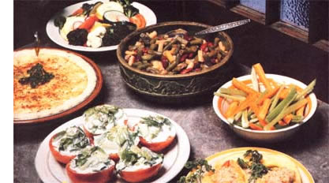

It's duly, that one time of year when our gardens are producing vegetables faster than most of us can think up recipes to use them in. Since your growings should be freshly picked-or at least immediately refrigerated-to capture that marvelous flavor and those precious nutrients, the seasonal superabundance can exhaust your menu repertory. So here are a few ideas for luscious summer meals, created by some imaginative chefs right here in MOTHERland.
Bon appetit!
(Sarah Struby)
3 cups of sliced onions
3 tablespoons of butter
1 pint of sour cream
2-eggs, slightly beaten
1-1/2 teaspoons of salt,
1/4 teaspoon of pepper
1 1'8 teaspoon of ginger
2 teaspoons of caraw ay seeds
paprika
pastry for a 9 -inch pie
Slowly sauté the -onions in butter until they're soft and golden brown. Then mix all of the other ingredients (except the caraway seeds and paprika) together in s bowl and add the onions. Turn the mixture Into a 9-inch pie pan lined with your favorite pastry recipe . . . sprinkle with car away-seeds arid-paprika, and bake at 350 ° F for 20-to 30-minutes -or until the pie is firm enough that a knife stuck into it comes out clean. Cut the pie into six individual servings.
(Helen Popvich)
1 pound of green beans, cooked
1 pound of yellow wax beans, cooked
pound of red kidney beans, cooked
1 /2 cup of chopped green pepper
1 large onion, chopped
1 teaspoon of sugar
2/3 cup-of-salad or olive oil teaspoons of salt
1/2 teaspoon of pepper
Mix all of the ingredients in a large bowl and refrigerate for at least two hours before serving. For best results, let the salad chill overnight, then serve It to eight diners.
(Paul Parce)
1 medium onion
1 pound of carrots
1 bunch of celery
1 /4 pound of butter
a pinch of nutmeg
1 teaspoon of salt
1 teaspoon of pepper
Wash and peel the vegetables. Cut them into julienne strips 1/4" wide and 1-1/2" long. Then melt the butter in a skillet and add the nutmeg, Toss in the onions to simmer until they're "clear". Add the carrots, celery, salt and pepper, and cook the vegetables until they're al dente (crisp to the bite). This will provide a colorful dish for eight people.
(Lizabeth Stickle)
1 head of broccoli
1/2 head of cauliflower
3 large tomatoes
1 small yellow squash
3 spring onions
1 cucumber
6 radishes
2 ounces of sunflower seeds
Chop and combine all of the Vegetables in a large bowl. Than add vinaigrette dressing (see the recipe"below), and toss the salad until the vegetables are coated. Sprinkle the sunflower seeds on top and chill the mixture for about two hours before serving it to eight salad fanciers.
2 teaspoons of salt
1 teaspoon of black pepper
4 teaspoons of vinegar
1 teaspoon of dry mustard
4 tablespoons of salad oil
Combine the salt, pepper, vinegar, and mustard in a small bowl or salad dressing shaker. Slowly add the oil, and then mix the dressing well.
(Paul Parce)
1/2 head of iceberg lettuce (or its leaf equivalent)
6 stalks of celery
6 large, ripe tomatoes
1/2-cup of mayonnaise
2 teaspoons of black pepper
2-tablespoons of dill weed
1/2 teaspoon of salt
1/2 teaspoon of white pepper
To prepare six individual salads carefully wash and drain all the vegetables. Then chop the lettuce and celery into small pieces and place them in a mixing bowl add the mayonnaise, black pepper, and dill weed, and let the mixture marinate an hour in the refrigerator. Next cut the tomatoes in half and score them lightly. Sprinkle the salt arid white pepper over them and place 1-1/2 ounces of the lettuce-celery mix ture on the cut sides of the tomato halves. Chill the salad-topped love ap ples for an hour before serving.
(Lizabeth Stickle)
6 yellow squash
1 tablespoon of unrefined oil
1 medium onion, chopped
1 medium tomato, chopped
1 cup of whole-kernel corn
1 egg yolk, beaten salt and pepper to taste
1/2 cup of wholes wheat bread crumbs
about 1-tablespoon-of-butter
Parboil the squash and cut them into halves lengthwise. Scoop Dut the centers and, putting the shells aside to drain thoroughly, place the pulp in a medium-sized bowl. Next, sauté the onions in the oil and add the tomato . . . corn . . . and egg yolk to the pot with the squash centers. Toss in salt and pepper to suit your taste, and pour in the cooked onions. Simmer the mixture briefly. Now, place the vegetable shells in a baking dish and fill them with the brew. Top the stuffed "boats" with buttered bread crumbs and bake them at 380°F for 30-minutes: This recipe will serve six happy squash-lovers.
THE Mother Earth News(restricted), 105 Stoney Mountain Road, Hendersonville, N.C. 28791. Subscription rates:1 year, $18; 2 years, $33; 3 years, $45. Outside U.S.A.: 1 year, $21; 2 years, $39; 3 years, $54.
|
 |
|
|